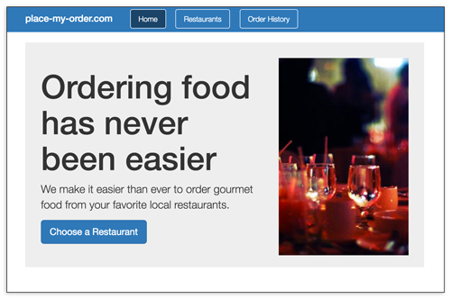

Guides
DoneJS is about getting your application ... done ... so you can spend time with your friends and family. To demonstrate how easy it is to make something amazing with all the bells and whistles a modern developer needs, we created the following guides.
Quick start: donejs-chat
In the quick start guide, we will build a small chat application - https://chat.donejs.com/. You'll learn about:
In-depth: place-my-order

In the place-my-order guide, we will go into detail, creating http://place-my-order.com, a restaurant menu order application. You'll learn everything covered in the "Quick start", plus more:
Creating a plugin
In the plugin guide, we will create a reusable number input widget using Bootstrap styles. We will cover:
Example App: Bitballs
In this guide, you'll learn how Bitballs - a charity basketball tournament management application - works. Specifically, this guide will walk through the implementation of the following behaviors or functionality:
Migrating to DoneJS 1
Explains how to upgrade DoneJS 0.9 app to 1.0.
Contributing
The contribution guide includes information about our code of conduct, reporting bugs, submitting new code, and more!
Server rendering
In this guide you'll learn how to use the great features of done-ssr outside of a traditional DoneJS app. This guide walks through building a React app with a streaming list, and then building an HTTP/2 server that renders using done-ssr and can-zone.